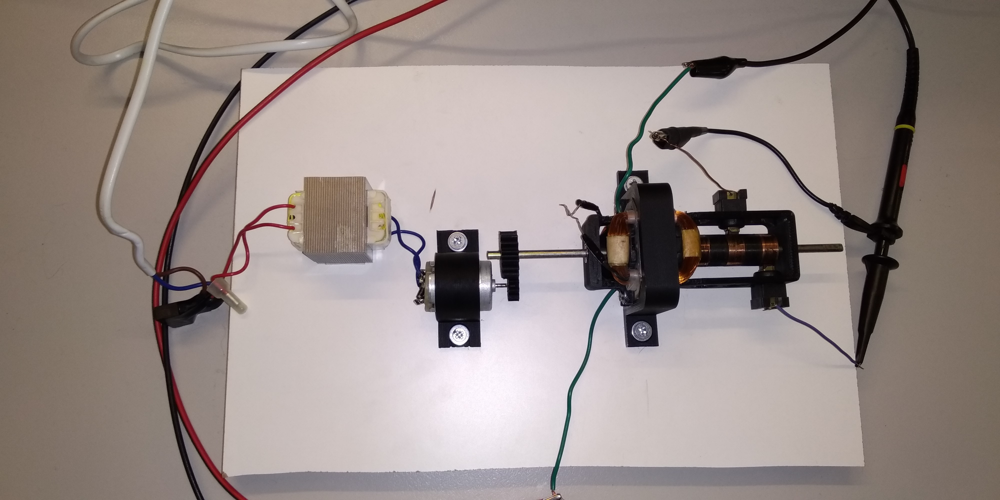

Πρακτική Άσκηση
Το κύριο αντικείμενο της εργασίας μου βασίστηκε στη βιομηχανική αυτοματοποίηση. Τα καθήκοντά μου πραγματοποιήθηκαν σε όλη τη διαδικασία παραγωγής βιομηχανικών συσκευών. Από τη συναρμολόγηση ηλεκτρονικών εξαρτημάτων σε pcb, μέχρι την οριστικοποίηση της συσκευής που ήταν η τοποθέτηση σε χάρτνα κουτιά. Επίσης, είχα την ευκαιρία να δοκιμάζω τα προϊόντα σε τελικό στάδιο παραγωγής.
Οι συσκευές που ασχολήθηκα ήταν προϊόντα DIN rail και plugable. Για παράδειγμα, χρονόμετρα, έλεγχος στάθμης υγρών, αντλίες ελέγχου τάσης, εναλλάκτες κ.λπ.
Projects
1. Κινητήρας
Στα πλαίσια του μαθήματος Ανανεώσιμες Πηγές Ενέργειας σε συνεργασία με μια συμφοιτήτριά μου έγινε προσπάθεια κατασκευής μιας στοιχειώδους ηλεκτρικής μηχανής, που δίνει τη δυνατότητα λειτουργίας ως κινητήρας και ως γεννήτρια.

2. Τηλεκατευθυνόμενο Αεροπλάνο
Σε συνεργασία με έναν φίλο μου στον ελεύθερό μας χρόνο ασχοληθήκαμε με την κατασκευή ενός τηλεκατευθυνόμενου αεροπλάνου με χρήση του μικροελεγκτή Arduino.
Ασχοληθήκαμε τόσο με το ηλεκτρονικό μέρος, όσο και το κατασκευαστικό.